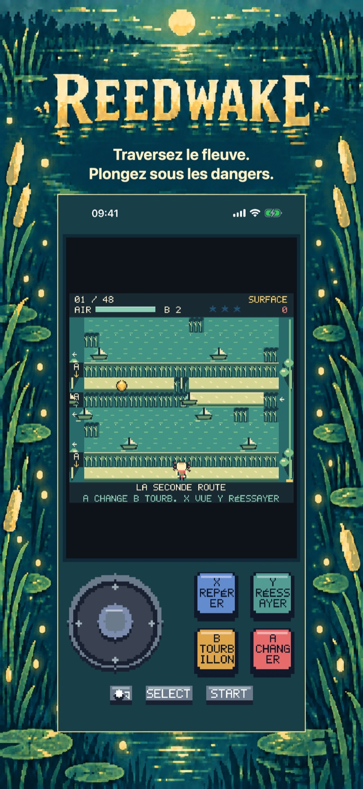
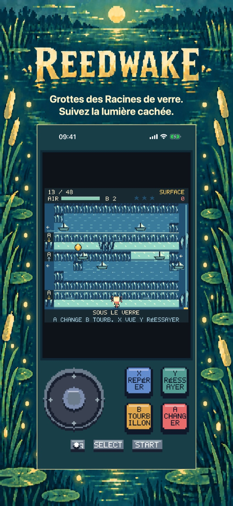
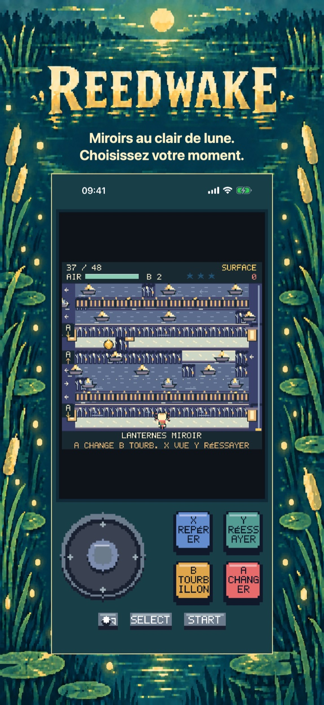
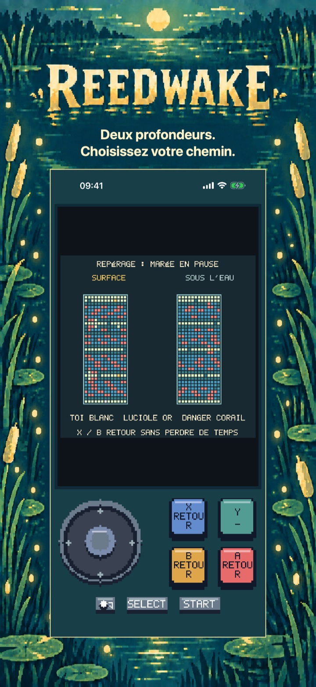
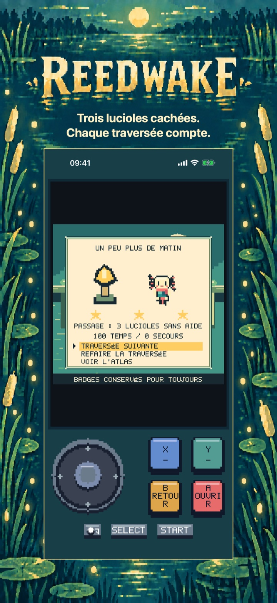
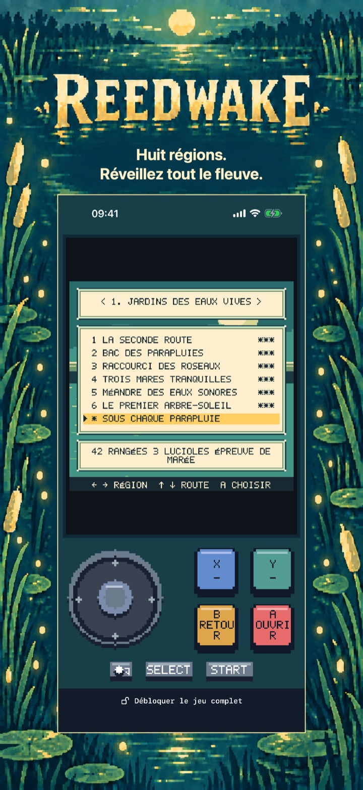

Reedwake
Reedwake : Aventure fluviale
Deux profondeurs, un fleuve à réveiller. Traversez les courants, plongez sous les dangers et rallumez huit arbres-soleils. Essayez six traversées gratuites.
Bientôt sur l’App Store
Les six premières traversées narratives des Jardins des Eaux vives sont gratuites.

Le voyage
Traversez la rivière sur deux profondeurs
X repère les deux couches sans perdre de temps. START met en pause. Les réglages proposent rythme doux et mouvements réduits. L’atlas compte 48 parcours narratifs et huit épreuves de marée facultatives.
Régions
Épreuves de marée
Niveaux de profondeur
Commencez par une région d’ouverture complète
Jardins des Eaux vives : les six premières traversées narratives.
Les six premières traversées narratives des Jardins des Eaux vives sont gratuites.
Poursuivez le voyage de Nim
Débloque sept autres régions, 42 traversées narratives, les huit épreuves de marée et l’histoire complète jusqu’à sa fin.
Achat unique · Sans publicité · Sans abonnement
Prix de base en Espagne : 3,99 € ; Apple fixe les prix des autres boutiques.
Reedwake
Plongez, esquivez, illuminez
Réveillez le fleuve, une traversée à la fois.
Guidez Nim dans une aventure fluviale en pixel art à deux profondeurs. Sautez entre les obstacles en mouvement à la surface, plongez sous l'agitation et trouvez un endroit sûr pour reprendre votre souffle. Les voûtes de racines et les hauts-fonds empêchent de tout contourner par une seule couche : observez le fleuve, choisissez votre instant et changez de profondeur.
UNE PETITE CLOCHE QUI CHANGE TOUT La cloche de tourbillon immobilise les dangers pendant quelques précieux battements. Inspectez les deux couches pendant que le temps est suspendu et préparez votre prochain mouvement. Le rythme doux ralentit l'action sans réduire les récompenses et conserve ses propres records.
HUIT RÉGIONS À RALLUMER Le jeu complet propose 48 traversées narratives réparties sur huit régions, ainsi que huit épreuves de marée facultatives. Récoltez trois lucioles par parcours, obtenez jusqu'à 168 badges, rencontrez les gardiens du fleuve et restaurez ses huit arbres-soleils. Les secours aux points de contrôle vous aident à réessayer et la sauvegarde locale garde votre voyage en mémoire.
UN PREMIER CHAPITRE COMPLET ET GRATUIT Jouez gratuitement les six traversées des Jardins des Eaux vives. Un seul achat permanent du Jeu complet débloque les sept autres régions, les 42 traversées narratives restantes, les huit épreuves de marée et toute l'histoire avec sa fin. Sans publicité, abonnement, consommables ni essais payants. Les réglages, l'inspection et le rythme doux restent accessibles dans la partie gratuite. La restauration des achats et le partage familial sont pris en charge.
JOUEZ À VOTRE FAÇON Alternez entre le stick analogique et la croix directionnelle à l'écran. Utilisez les quatre boutons d'action, une manette compatible ou un clavier physique. Jouez en français, anglais, espagnol, allemand ou italien. Aucun compte nécessaire : la progression et les réglages restent sur votre appareil.
Dans le jeu
Dans le jeu
Les six vues suivent le voyage dans l’ordre : mécanique centrale, deux nouvelles régions, puzzle plus approfondi, traversée réussie, puis atlas.
Plongez sous les dangers.

Suivez la lumière cachée.

Choisissez votre moment.

Choisissez votre chemin.

Chaque traversée compte.

Réveillez tout le fleuve.
Aide et assistance
Des questions sur Reedwake ?
Trouvez des réponses pratiques sur les commandes, la progression sauvegardée, le début gratuit et l’achat du jeu complet.
Comment déplacer Nim ?
Le guide intégré explique les déplacements, les changements de profondeur et les dangers. Utilisez la commande de déplacement pour avancer case par case ; l’action A change de couche lorsque le parcours le permet.
La croix déplace Nim d’une case par battement. Garde une direction pour continuer à bondir. Rejoins l’arbre-soleil sur l’autre berge. Pas de compte à rebours ni de limite de vies.
A plonge ou remonte. Les toits de racines bloquent le haut, les hauts-fonds le bas. Trouve les ouvertures et change de couche AVANT de traverser. Les flèches A indiquent la couche ouverte.
Où ma progression est-elle sauvegardée ?
La progression, les badges et les réglages sont enregistrés localement sur cet appareil. Reedwake ne nécessite aucun compte. La suppression de l’app retire les données locales, sous réserve des sauvegardes habituelles du système d’exploitation.
Que peut-on jouer gratuitement ?
Jardins des Eaux vives : les six premières traversées narratives.
Que débloque l’achat du jeu complet ?
Débloque sept autres régions, 42 traversées narratives, les huit épreuves de marée et l’histoire complète jusqu’à sa fin.
Achat unique · Sans publicité · Sans abonnement Prix de base en Espagne : 3,99 € ; Apple fixe les prix des autres boutiques.
Comment restaurer un achat ?
Ouvrez la fenêtre d’achat du jeu complet et choisissez Restaurer les achats.
Mon achat est en attente ou la boutique est indisponible. Que faire ?
Un achat en attente nécessite encore une autorisation ou doit être finalisé ; vous pouvez continuer le chapitre gratuit et réessayer plus tard. Si la boutique ne se charge pas, vérifiez votre connexion puis réessayez. Un achat ou une restauration vérifiés débloquent le jeu complet tout en conservant votre progression.